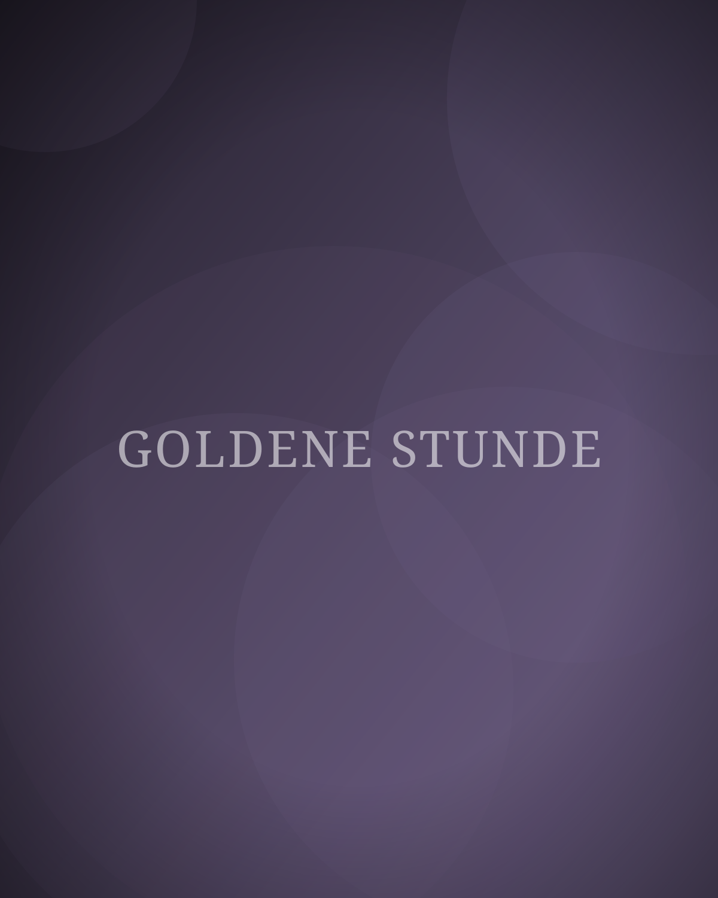
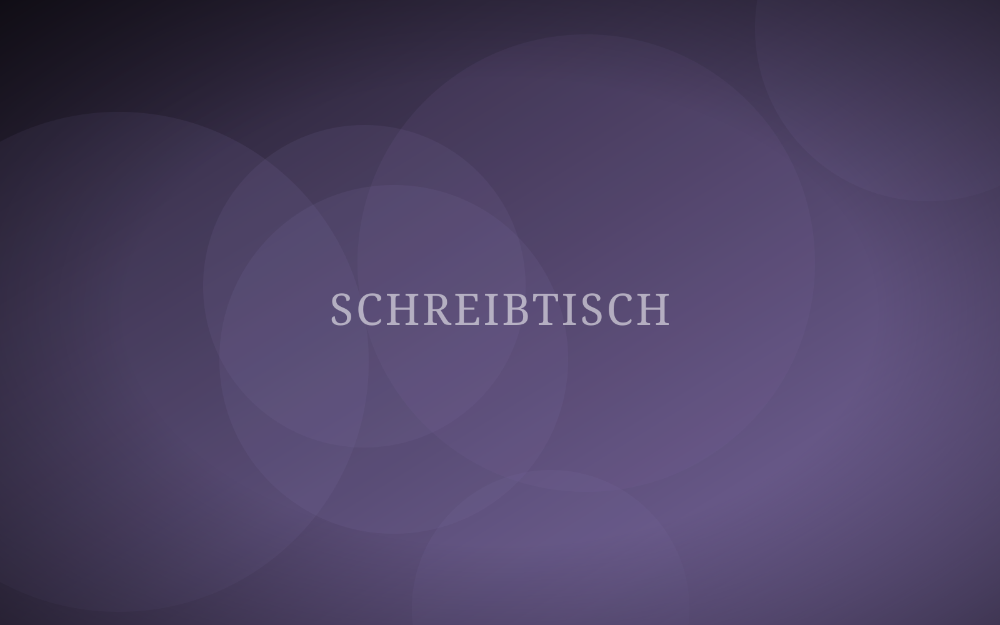
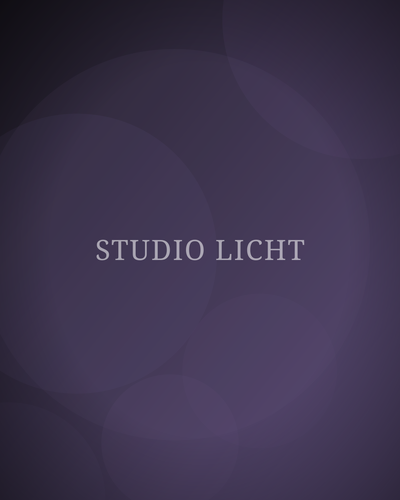
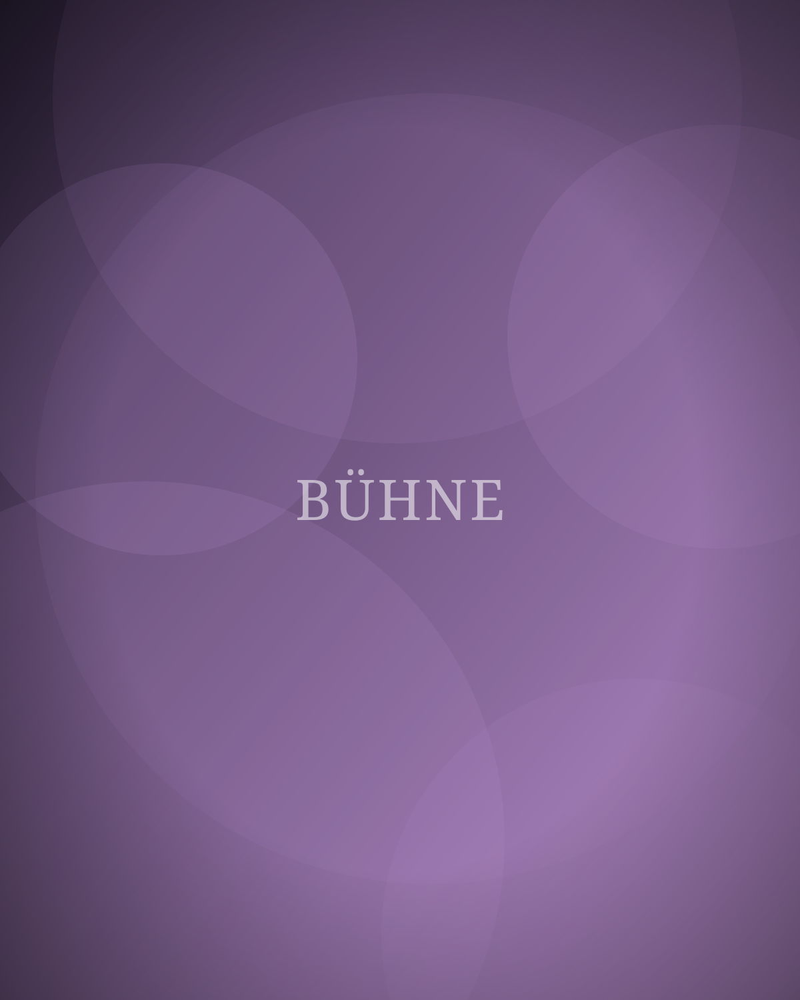

Licht lesen lernen
Warum ich Einsteigerinnen rate, ein halbes Jahr lang keine Kamera zu kaufen, sondern nur hinzuschauen.
WeiterlesenIch bin Patrizia Ruthmann. Ich fotografiere Menschen, schneide Filme und schreibe Bücher. Drei Handwerke, ein Blick.
Ob als Fotografin, am Schnittplatz oder am Schreibtisch: Es geht immer um denselben Moment, in dem etwas wahr wird.

Portraits, Reportagen, Hochzeiten. Natürliches Licht, ruhige Farben, echte Momente.
PortfolioImagefilme, Dokus, Hochzeitsfilme, Social Clips. Dramaturgie, Schnitt und Color Grading.
Showreel
Drei Bücher, Essays, Kolumnen. Dazu Auftragstexte und Lektorat für Menschen mit etwas zu sagen.
Bücher & TexteSeit über zehn Jahren arbeite ich mit Bildern, seit acht mit bewegten und seit immer mit Worten. Ich habe gelernt, dass es beim Fotografieren, Schneiden und Schreiben um dasselbe geht: weglassen, bis nur noch das Wesentliche bleibt.
Mein Studio steht in Leipzig-Plagwitz. Meine Arbeiten hängen in Wohnzimmern, laufen auf Messen und stehen in Buchhandlungen.
Mehr über mich

Warum ich Einsteigerinnen rate, ein halbes Jahr lang keine Kamera zu kaufen, sondern nur hinzuschauen.
WeiterlesenWie ich bei der Kurzdoku „Die letzte Schicht“ die Struktur gefunden habe, und warum der erste Schnitt immer zu lang sein darf.
WeiterlesenDrei Disziplinen, ein Kopf. Wie ich meine Woche aufteile, damit Bild, Film und Text sich nicht gegenseitig im Weg stehen.
Weiterlesen„Patrizia war den ganzen Tag da und trotzdem haben wir sie kaum bemerkt. Fotos und Film sind genau so, wie sich der Tag angefühlt hat.
„Aus unserem chaotischen Drehmaterial hat sie einen Imagefilm gemacht, der auf der Messe wirklich Leute stehen bleiben ließ.
„Ihr Lektorat war streng, klug und respektvoll. Mein Manuskript ist danach ein anderes Buch geworden. Ein besseres.
Ein Foto, ein Film, ein Text oder alles zusammen. Schreib mir, woran du gerade arbeitest.
Jetzt anfragen